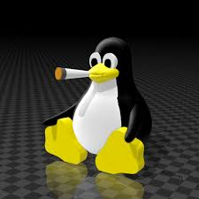

1. Python — это высокоуровневый язык программирования общего назначения . Его философия дизайна делает акцент на читаемости кода с использованием значительных отступов .
 2. C ++ ( / ˈs iːp lʌs p lʌs / , произносится как « C plus plus » и иногда сокращается как CPP ) — это высокоуровневый язык программирования общего назначения , созданный датским ученым-компьютерщиком Бьярне Страуструпом . Впервые выпущенный в 1985 году как расширение языка программирования C , с тех пор он значительно расширился с течением времени; по состоянию на 1997 год C++ имеет объектно-ориентированные , универсальные и функциональные возможности, в дополнение к средствам для низкоуровневой манипуляции памятью для таких систем, как микрокомпьютеры , или для создания операционных систем, таких как Linux или Windows . Обычно он реализуется как компилируемый язык , и многие поставщики предоставляют компиляторы C++ , включая Free Software Foundation , LLVM , Microsoft , Intel , Embarcadero , Oracle и IBM . [ 14 ]
 3. Бьярне Страуструп ( / ˈ b j ɑːr n ə ˈ s t r ɒ v s t r ʊ p / ; датский: [ˈbjɑːnə ˈstʁʌwˀstʁɔp] ; [ 3 ] [ 4 ] родился 30 декабря 1950 года) — датский учёный-компьютерщик , известный разработкой языка программирования C++ . [ 5 ] Он возглавлял отдел исследований крупномасштабного программирования в Bell Labs , занимал должность профессора компьютерных наук в Техасском университете A&M и провёл более десяти лет в Morgan Stanley , одновременно являясь приглашенным профессором в Колумбийском университете . С 2022 года он является штатным профессором в Колумбийском университете. [ 6 ]
3. Бьярне Страуструп ( / ˈ b j ɑːr n ə ˈ s t r ɒ v s t r ʊ p / ; датский: [ˈbjɑːnə ˈstʁʌwˀstʁɔp] ; [ 3 ] [ 4 ] родился 30 декабря 1950 года) — датский учёный-компьютерщик , известный разработкой языка программирования C++ . [ 5 ] Он возглавлял отдел исследований крупномасштабного программирования в Bell Labs , занимал должность профессора компьютерных наук в Техасском университете A&M и провёл более десяти лет в Morgan Stanley , одновременно являясь приглашенным профессором в Колумбийском университете . С 2022 года он является штатным профессором в Колумбийском университете. [ 6 ]